5MMCS001W Lecture 12 - Unity Lighting and Shaders
Lecture Overview
Unity Lighting
5MMCS001W Lecture 12
Unity Lighting and Shaders
Unity Lighting, Shaders
Check Smoothness on Model
Check Smoothness on Model:
- Smoothing group exports in Max Fbx Export
- Calculate Normals and Tangents in Unity
- (Import Setting window with object selected in Project)
Unity Lighting – 3 Types
- 1. Direct – RealTime
- 2. Baked Global Illumination (Lightmaps)
- 3. Precomputed Realtime Global Illumination
Unity Lighting - Real Time Lighting in Scene
Features of Direct Lighting
Lights in Unity by default are Realtime and Direct
- Features of Direct Lighting
- 1. Shadows are Black
- 2. Active Objects Lit
- 3. Light Rays do not bounce
- 4. Fast Calculations
- 5. Real Time
Light Component Types
- Light Component:
- 1. Directional – parallel, non-diverging light source, rotational only
- 2. Spot – cone of light in +Z direction
- 3. Point – point sphere light is emitted in all directions
- 4. Area – soft light in all directions from one side of plane (Baked only)
Other Light Sources
- Others:
- 1. Ambient
- 2. Emissive
- 3. Probes
Precomputed and Baked Global Illumination
Unity Lighting – Precomputed Lighting
Offers light bouncing on top of basic Direct lighting:
- 1. Soft Shadows
- 2. Colour bleed
- 3. Light Bouncing – for LightMap or RealTime
Unity Lighting – Baked Global Illumination (Lightmaps)
Unity can calculate complex static lighting effects (using a technique called global illumination, or GI) and store them in a reference texture map called a lightmap. This calculation process is referred to as baking.
When baking a lightmap, the effects of light sources on static objects in the scene are calculated and the results are written to textures which are overlaid on top of scene geometry to create the effect of lighting.
- Features
- 1. Direct and Indirect Light
- 2. Work with Objects’ Shader Information (Color and normals)
- 3. Static – no moving objects
- 4. Cannot react to changes in lighting, movement
- 5. Low performance impact
With baked lighting, these light textures (lightmaps) cannot change during gameplay and so are referred to as ‘static’. Realtime lights can be overlaid and used additively on top of a lightmapped scene but cannot interactively change the lightmaps themselves.
Unity Lighting – Precomputed Realtime Global Illumination
Whilst static lightmaps are unable to react to changes in lighting conditions within the scene, precomputed realtime GI does offer us a technique for updating complex scene lighting interactively.
With this approach it is possible to create lit environments featuring rich global illumination with bounced light which responds, in realtime, to lighting changes. A good example of this would be a time of day system - where the position and color of the light source changes over time. With traditional baked lighting, this is not possible.
In order to deliver these effects at playable framerates, we need to shift some of the lengthy number-crunching from being a realtime process to one which is precomputed.
Precomputing shifts the burden of calculating complex light behaviour from something that happens during gameplay, to something which can be calculated when time is no longer so critical. We refer to this as an ‘offline’ process.
Geomerics Enlighten System
Unity Lighting – Precomputed Realtime Global Illumination- Geometrics Enlighten System
http://www.geomerics.com/enlighten/
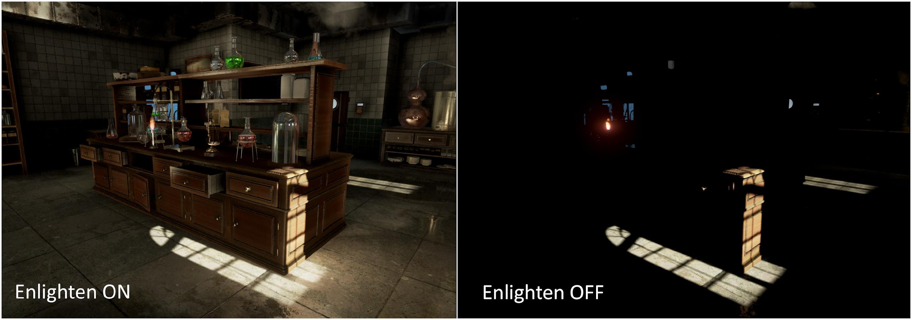
Precomputed Realtime GI - Features
- Features
- 1. Direct and Indirect Light
- 2. Work with Objects’ Shader Information (Color and normals)
- 3. Dynamic for Object and Lights
- 4. Reacts to changes in lighting, movement
- 5. Some performance impact in Runtime rendering
- 6. Using Baked and Precomputed at same time gives double performance impact
Global Illumination Concepts and Lighting Setup
Global Illumination – GI Concepts
Global Illumination (GI) is a system that models how light is bounced off of surfaces onto other surfaces (indirect light) rather than being limited to just the light that hits a surface directly from a light source (direct light). Modelling indirect lighting allows for effects that make the virtual world seem more realistic and connected, since objects affect each other’s appearance. One classic example is ‘color bleeding’ where, for example, sunlight hitting a red sofa will cause red light to be bounced onto the wall behind it. Another is when sunlight hits the floor at the opening of a cave and bounces around inside so the inner parts of the cave are illuminated too.
- Direct Lighting – Faster Calculations, Real Time
- Indirect Lighting – Slower calculations
- Offline - Baked - Precalculated
- For Static Objects
- Correct at Runtime
- Not Dynamic
- Results in Realtime Soft Shadows and Indirect light
Unity GI - Precomputed Realtime GI
https://docs.unity3d.com/Manual/GIIntro.html
Precomputes all possible light bounces and encodes this information for use at runtime.
- 1. Real time GI and baking light maps
- All lights affect with direct and indirect
- Bounces and takes colours
- All lights affect with direct and indirect
- 2. Physically based rendering – PBR
- Light is modelled and imitated
- 3. Standard shader
- PBR - easy to access
Unity Lighting Setup Overview
https://unity3d.com/learn/tutorials/topics/graphics/unity-5-lighting-overview?playlist=17102
Ambient Light, Reflections and Light sources, working with materials created with the standard Shader are drawn using Physical Based Rendering with Global Illumination to calculate the Indirect Light
- 1. Real Time (Scene) for basic work only – Real Time, Direct, Dynamic
- 2. Dynamic (RealTime GI) – Precomputed Direct and Indirect, Dynamic
- 3. Baked (Static GI) – Precomputed Direct and Indirect, Static
- Can have Real Time Emissive Probes for Dynamic objects
Can have mix of lights if desired, but usually best to stick with one system (baked) for mobile.
Ambient Light and Physical Based Rendering takes these and shaders for rendering with light settings.
Lighting Panel and Colour Space
Lighting Panel - Ambient
Directional Light tick box at top turns off ambient light
Ambient is Skybox, Gradient, or Colour
Object, Scene, Lightmap Tabs
Skybox Tutorial
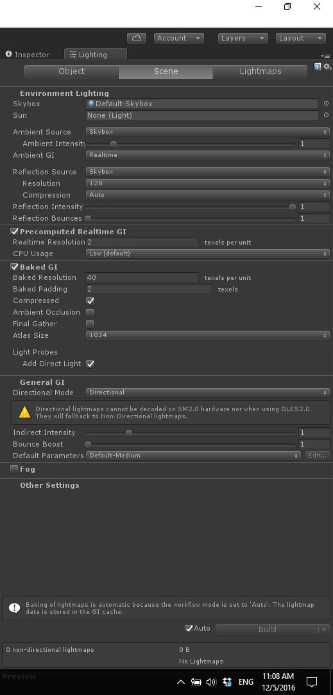
Lighting Panel – RealTime, Baked, Mixed
Precomputed Realtime GI and Baked GI both Enabled in Lighting Panel by Default. Can Chose Realtime GI or Baked GI for each light if this is true
Indirect Intensity and Bounce can be adjusted here.
Best to chose one or other and untick one globally here.
All Baked more appropriate for mobile devices
Continuous (Auto checkbox ticked)
On Demand (Auto checkbox unticked, click Build)

Light Panel – RealTime, Baked, Mixed
https://unity3d.com/learn/tutorials/topics/graphics/unity-5-lighting-overview?playlist=17102
- Baking - Select in Lights on per light basis
- Real Time
- Baked
- Mixed
- Light Mapping system - Lighting tab>Scene
- Continuous Baking
- On-Demand Baking
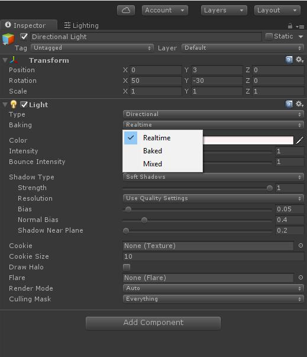
Unity Lighting Setup - Linear
PBR works best in Linear colour Space in Player Settings
Set color space to linear - default - CHECK
Most software use gamma
https://docs.unity3d.com/Manual/LinearLighting.html
https://renderman.pixar.com/view/LinearWorkflow
Ambient Light and Skybox
Ambient Light
Light Objects – Directional Light is default in Scene
Ambient Light – Skybox is default in Scene, Also Gradient or Single Colour
Emissive Light
Default Scene
- 1. Directional Light
- 2. Skybox / Ambient light - default
- Lighting panel
- Created with Skybox, gradient, or single color
- All objects receive unless 0 and/or black
- All objects reflect - receive from skybox or custom cube map
- Delete to remove all reflections
For full lighting control, set to black and delete.
Unity Lighting Setup - Skybox
Video: Unity 5 Intro to Skybox and Realtime Global Illumination
Skybox - new system –
Enlighten - Image based lighting
Changes color, procedural skybox
accurate sun
Skybox - update
HDRI instead - for atmosphere - beyond white
Cubic map or 6-sided
Skybox is ambience

Light Sources, Render Mode and Light Effects
Light Objects Beyond Basic (Sources)
- Ambient (All)
- Skybox (Default), Custom Cube
- Gradient
- Color
- Gradient
- Skybox (Default), Custom Cube
- Area (Baked GI)
- Rectangle emitting soft light from one side, all directions
- Not Precomputed Realtime GI (use Emissive)
- Rectangle emitting soft light from one side, all directions
- Emissive surfaces (Precomputed GI)
- Act as indirect light sources
- Use shader Emission property
- Realtime light mapping - Can be dynamic, scripted
- Use shader Emission property
- Act as indirect light sources
- Probes (All)
- Light Probes - Sample scene to light dynamically at lower cost than realtime GI
- Reflection Probes (1 default in every scene for skybox reflection)
- Reflection reference – cube map
- Reflective objects in space can reference
- Reflection Probes (1 default in every scene for skybox reflection)
- Light Probes - Sample scene to light dynamically at lower cost than realtime GI
Unity Lighting Setup – Render Mode for Dynamic Lights
- RENDER MODE PER LIGHT - component for Dynamic Lights!
- Important - per pixel
- Not important - per vertex
- Important - per pixel
- Vertex Lighting – fastest (Not Important)
- Calculates at vertices of mesh
- Lighting is interpolated over surface
- Calculates at vertices of mesh
- Per Pixel Lighting – expensive (Important)
- At every screen pixel
- More advanced effects - normal, cookies, rt shadows
- Better effects - spotlight shapes, specular highlights
- Pixel light count property - quality setting
- At every screen pixel
Unity Lighting Setup – Light Effects
- Cookie - pattern, alpha texture,
- Not area
- Baked - spot only
- Shadows
- Hard - efficient
- Soft - costly
- Strength
- Resolution - quality
- Bias - distance
- Directional - softness and fade
- Flares
- Similar to halo
- Lens flare - attached to GO
- Flare layer attached to camera
- Similar to halo
- Halo
Emissive Materials and Probes
Unity Lighting Setup - Emissive
Area lights do not support Precomputed Realtime GI, this is a similar effect over surface of material. Can be dynamic. Property of Standard Shader
‘Emission’ is a property of the Standard Shader which allows static objects in our scene to emit light. By default the value of ‘Emission’ is set to zero. This means no light will be emitted by objects assigned materials using the Standard Shader. The HDR color picker can be used to select colors with intensities beyond the 0-1 range in order to create bright light effects similar to those of Area Lights.
There is no range value for emissive materials but light emitted will again falloff at a quadratic rate. Emission will only be received by objects marked as ‘Static’ or “Lightmap Static’ from the Inspector. Similarly, emissive materials applied to non-static, or dynamic geometry such as characters will not contribute to scene lighting.
However, materials with an emission above zero will still appear to glow brightly on-screen even if they are not contributing to scene lighting. This effect can also be produced by selecting ‘None’ from the Standard Shader’s ‘Global Illumination’ Inspector property. Self-illuminating materials like these are a useful way to create effects such as neons or other visible light sources.
Emissive materials only directly affect static geometry in your scene. If you need dynamic, or non-static geometry - such as characters, to pick up light from emissive materials, Light Probes must be used. Changing emission values at gameplay will update Light Probes interactively and the results will be visible on any objects presently receiving light from those probes.
Unity Lighting Setup - Probes
Probes
- Lighting - for dynamic characters in Baked Lightmap - low-cost
- Reflection - HDRI, cuboid boundaries, box projection
- Cube map is reference
- Default - uses skybox for basic
- Should add more
Unity Standard Shader - Physically Based Rendering
Unity Standard Shader
Video: Unity 5 Graphics - The Standard Shader - Unity Official Tutorials
Objects in scene rendered with Standard Shader
Physically Based Shader
Mimics physical conditions of light transmission
Specularity = Metalness
Reflections
- 1. Skybox/Cubemap – 6 sided box derived from sky
- 2. Reflection Probe – renders environment from point, overrides Skybox
Blended with other lighting and surface data by Material’s Shader
Standard (Metallic) - Metallic and Smoothness
Standard can be used for all - all default mesh, all new
Standard (metallic, not just metal, describes metallness, or Smoothness)
- Metallic
- By texture or value
- Black – non
- White – completely
- Texture will vary
- Alpha can define smoothness map
- Smoothness controls micro surface detail
- diffuse or sharper reflections
Two Choices: Metallic or Specular
Standard can be used for all - all default mesh, all new
Two Choices:
- Standard - Metallic (metallic, not just metal, describes metalness)
- Standard Specular - Specular (describes specularity, or Reflectivity)
Metalness vs Specular.
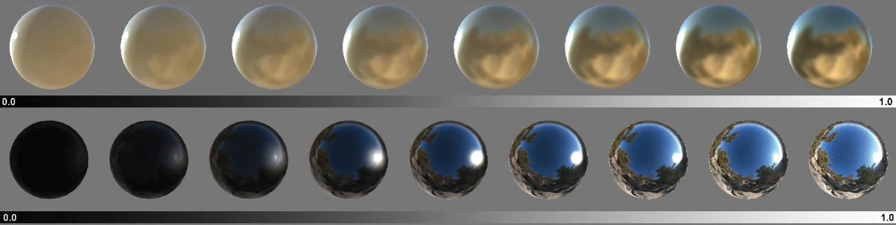
Smoothness in Metallic and Specular
Both Metallic and Specular have smoothness.
This defines sharpness of light reflection.
In Metallic, the colour value is derived from the Albedo (Diffuse) Colour
In Specular, it is separated out, so can be adjusted.
Metallic vs Specular Workflows and Calibration
Metallic Workflow
Metallic - means that one channel defines whether a thing reacts as metallic or non-metallic. Simplified speaking metallic means that the reflected light takes on the colour of the underlying surface because metallic absorbs wavelengths from the light.
Non metallic means that the colour is reflected the same way it hit the surface. So if a christmas tree is reflected from a shiny plastic surface you can still make out the green and all the different colors of the ornaments reflected. Being reflected from a gold surface things could look different.
The smoothness defines (separately) how blurry things get reflected from the surface - no matter if it's metallic or not. A plastic toy can be really shiny or rough - as can metal.
Specular Workflow
Specular - in the specular texture map you define the colour value of your reflection. So metallic surfaces from Specular Shaders need to have a coloured setting while plastic surfaces don't have a colour value. Opposed to metallic workflow where the colour value is derived from the Albedo.
In the specular setting you define a metallic look from the specular RGB channels.
The colour value defines the reflectance colour (absorption) - not the Albedo. The brightness defines how much is reflected, the colour defines in which color. Additionally there still is a smoothness value because surfaces are defined by being metallic/non-metallic, the color and the roughness.
BUT in specular you have more control over the colour mixing.
Physically Based Shading Values - Material Charts
Standard can be used for all - all default mesh, all new
Physical based Shading should follow realistic settings:
Table
https://docs.unity3d.com/Manual/StandardShaderMaterialCharts.html
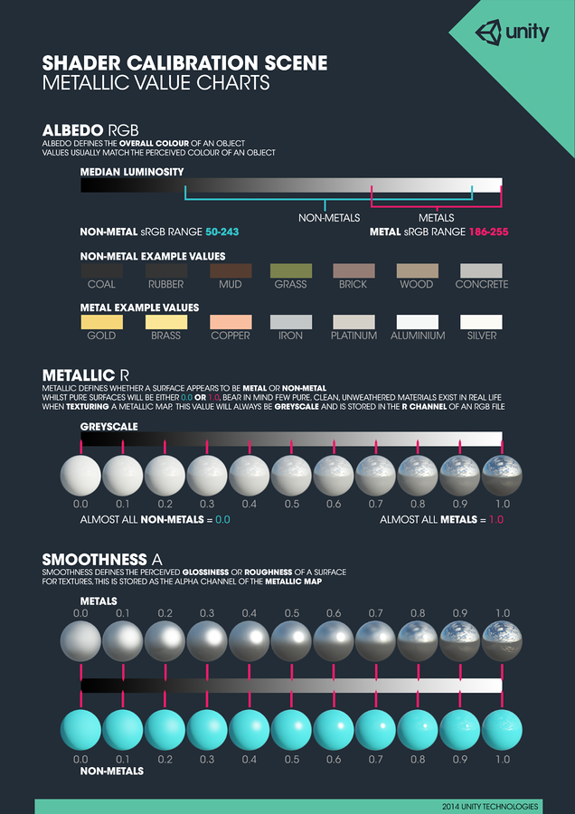
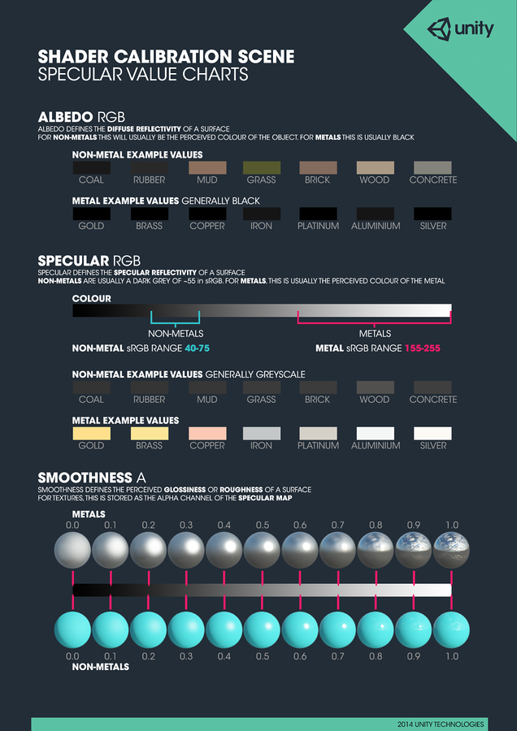
Standard Shader Maps, Rendering Modes and Materials
Standard Shader - Maps (Both have...)
Standard can be used for all - all default mesh, all new
Both have…
- Albedo
- If No texture, tinted by colour
- Optional Texture and Colour (white does not affect texture)
- Normal Map
- bumpiness of surface
- Height Map
- Slider for strength
- Occlusion
- Ambient Occlusion to darken in hidden areas
- Emission
- Value
- Shape – Map, B+W or Colour
- Baked or Realtime
- Secondary Map - Microdetail
Standard Shader - Rendering Mode
Standard can be used for all - all default mesh, all new
Standard (metallic, not just metal, describes metallness, or Smoothness)
Rendering Mode:
- Opaque
- Cutout
- Alpha on Diffuse image masks
- (If gradient - slider available)
- Fade
- Similar to transparent
- All effects transparent
- Fades out game object on screen
- Transparent – glass
- Alpha on diffuse color - level of trans
- Still reflects - Effects non transparent - see Fade above
Standard Shader - Specular Smoothness
Standard can be used for all - all default mesh, all new
Standard (Metals with Metallic workflow)
Specular has smoothness as well, very similar
- Texture or Color value
- Defines reflectivity
- Maps usually dark gray
- With no map, set with slider – 0 is porcelain, 1 is mirror
- diffusion of surface
Unity Materials and Shaders
Material - Asset that ties shader to a GameObject
- 1. Right Click and Create material
- 2. Drag to Object
- 3. Is assigned to Mesh Renderer in Material Slot
- 4. Mesh renderer Also has Light, Reflection Probe Slots
Slide 41 in the original deck repeats these steps with the diagram below.
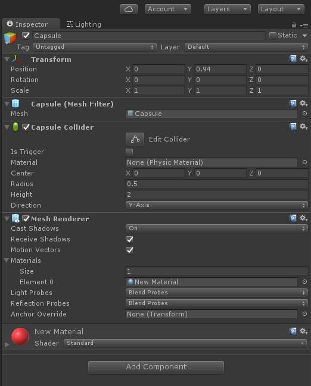
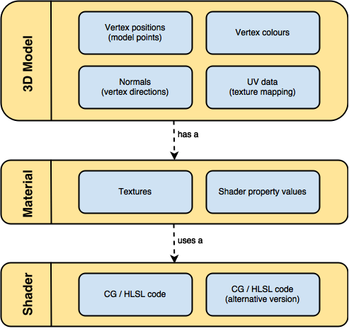
Lighting and Shader Video Tutorials
Tutorial – Standard Shader in Unity
Video embedded under Unity Standard Shader - Physically Based Rendering.
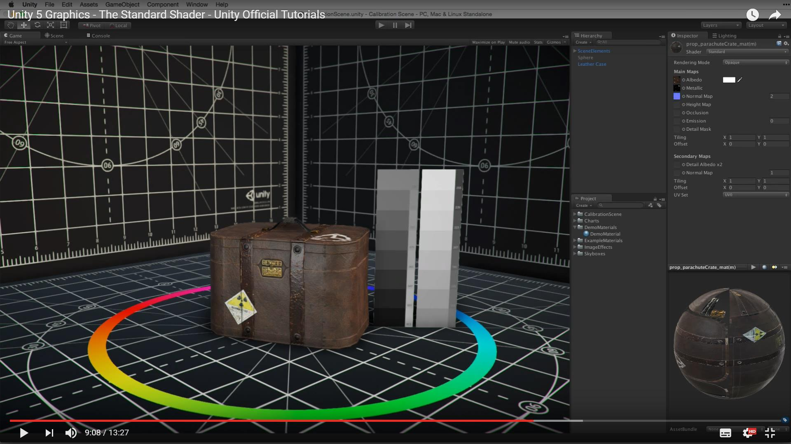
Tutorial – Skybox GI in Unity
Video embedded under Ambient Light and Skybox.
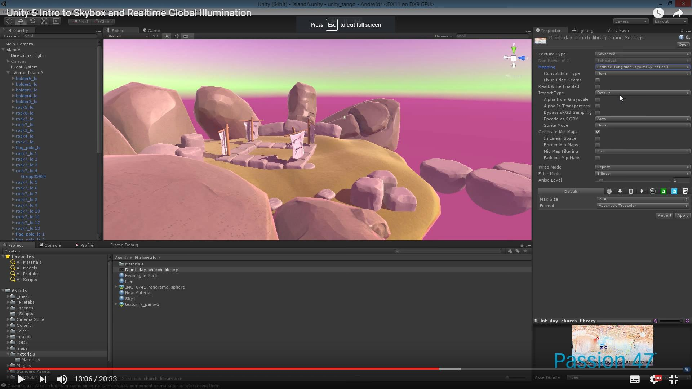
Tutorial – Basic Lighting in Unity - Entire Process
https://learn.unity.com/tutorial/introduction-to-lighting-and-rendering-2019-3
Older:
https://unity3d.com/learn/tutorials/topics/graphics/unity-5-lighting-and-rendering?playlist=17102
Standard Shader video: embedded under Unity Standard Shader - Physically Based Rendering.
Tutorial – Advanced GI in Unity 5 – Probes, Emissive
Video: Unity 5 - 100% Physically based shading - demo scene - full day/night
Video: Unity 5 Tutorial - Realtime Global Illumination, Day/Night Cycle, Reflection Probes
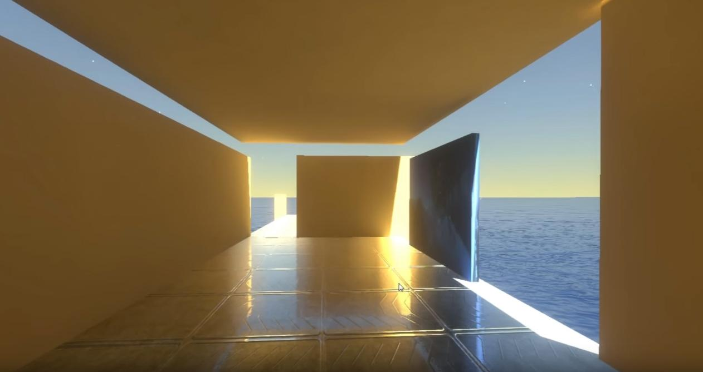
URP Updates, Conversions - Quick Steps
Quick summary of main steps
- 1. Backup Project
- 2. Install URP package.
- 3. Create a URP Pipeline Asset and Forward Renderer.
- 4-5. Assign the URP Pipeline Asset in Project Settings and Quality settings.
- 6. Upgrade built-in materials (project/scene) to URP materials.
- 7. Re-Bake Lighting
- 8. Quick Check
- 9. Fixes
Steps 1-3: Backup, Install URP, Check URP Asset
- 1. Backup your project
- Commit to version control or copy the project folder.
- 2. Install URP
- Window > Package Manager
- In Package Manager: select "Unity Registry", search "Universal RP" (or "Universal Render Pipeline") → select it → Install.
- 3. Check URP Asset is created and used
- Edit > Project Settings... > Graphics
- In Project Settings > Graphics: Scriptable Render Pipeline Settings → drag the Pipeline Asset here.
Steps 4-5: Create Pipeline Asset, Quality Levels
- 4. If not created, Create URP Pipeline Asset (and Forward Renderer)
- Assets > Create > Rendering > Universal Render Pipeline > Pipeline Asset (Forward Renderer)
- This creates a Pipeline Asset (and a Forward Renderer asset).
- 5. (Optional) Assign to Quality levels
- Edit > Project Settings... > Quality
- For each quality level: Render Pipeline Asset column → drag the Pipeline Asset.
Steps 6-7: Upgrade Materials, Re-bake Lighting
- 6. Upgrade built-in materials
- Edit > Render Pipeline > Universal Render Pipeline > Upgrade Project Materials to URP Materials
- (Or) Edit > Render Pipeline > Universal Render Pipeline > Upgrade Scene Materials to URP Materials
- 7. Re-bake lighting (after upgrades)
- Window > Rendering > Lighting
- In Lighting window: click "Generate Lighting" (or "Bake") or toggle "Auto Generate" if you prefer automatic baking.
Steps 8-9: Quick Check and Fixes
- 8. Quick check
- Select main Directional Light in Hierarchy → Inspector: ensure Shadows is not "None".
- Play scene in Editor and visually confirm lighting.
- 9. If visuals look off (common quick fixes)
- Check Camera exposure/post-processing volumes.
- Check converted Material inspector: Shader should show "Universal Render Pipeline/Lit" and Emission or Transparency settings may need re-enabling.
- Re-bake lighting if materials changed.
URP Conversion in Detail - Setup and Materials
Quick summary of main steps (detailed)
- 1. Install URP package.
- 2. Create a URP Pipeline Asset and Forward Renderer.
- 3. Assign the URP Pipeline Asset in Project Settings and Quality settings.
- 4. Upgrade built-in materials (project/scene) to URP materials.
- 5. Migrate custom shaders (Surface Shaders → Shader Graph / URP HLSL).
- 6. Validate lights, shadows, GI, reflection/light probes; re-bake lighting.
- 7. Tune Renderer Features, SRP Batcher, and performance settings.
- 8. Test on target platforms; fix visual mismatches.
1) Install URP package
- Menu: Window > Package Manager
- Select "Unity Registry" (top-left dropdown).
- Search for "Universal RP" or "Universal Render Pipeline".
- Select the package item "Universal RP" or "Universal Render Pipeline".
- Click the Install button.
- If you see versions, choose the URP version that matches your Unity LTS compatibility (consult Unity docs).
2) Create URP Pipeline Asset and Renderer
- Menu: Assets > Create > Rendering > Universal Render Pipeline > Pipeline Asset (Forward Renderer)
- Creates two or more assets: a Pipeline Asset (UniversalRenderPipelineAsset) and a Forward Renderer (UniversalRendererAsset) depending on Unity version.
- If prompted, pick the "Pipeline Asset (Forward Renderer)" variant (or create both the Pipeline Asset and a Forward Renderer separately).
- Alternative: Assets > Create > Rendering > Universal Render Pipeline > Forward Renderer
- Use this to create a named Forward Renderer asset to be referenced by a Pipeline Asset.
3) Assign URP asset to project & quality levels
- Assign globally:
- Menu: Edit > Project Settings... > Graphics
- Field: Scriptable Render Pipeline Settings (or Scriptable Render Pipeline Asset)
- Drag the Pipeline Asset (UniversalRenderPipelineAsset) into this field.
- Assign per-quality:
- Menu: Edit > Project Settings... > Quality
- For each Quality level you use, in the "Render Pipeline Asset" (or "Scriptable Render Pipeline Settings") column, drag the same UniversalRenderPipelineAsset.
- Note: Many projects assign it to all quality levels.
4) Use the Material Upgrade utility
- Menu: Edit > Render Pipeline > Universal Render Pipeline
- Options you will see (depending on version):
- Upgrade Project Materials to URP Materials
- Upgrade Scene Materials to URP Materials
- Actions:
- Click "Upgrade Project Materials to URP Materials" to convert built-in materials across the project (recommended, but ensure VCS backup).
- Optionally click "Upgrade Scene Materials to URP Materials" for an immediate scene-only conversion, if you want staged migration.
- What the upgrade does:
- Converts Standard shader materials to URP Lit or URP Simple Lit equivalents.
- Converts many built-in shader references to URP equivalents.
- It does NOT convert custom shaders (Surface Shader / custom CG/HLSL) — you must convert those manually.
URP Conversion in Detail - Shaders, Renderer, Lights, Shadows
5) Convert custom shaders and Surface Shaders
- Surface Shaders are not supported by URP. Options:
- Recreate shaders in Shader Graph:
- Menu: Assets > Create > Shader > Universal Render Pipeline > Lit Shader Graph (or "Shader Graph" > "URP Lit")
- Create a new Material from the Shader Graph:
- Right-click ShaderGraph asset > Create > Material OR create new material and assign the Shader Graph under Shader dropdown.
- Replicate inputs (Albedo, Normal, Metallic, Smoothness, Emission, etc.) in the graph.
- For advanced HLSL, place code into a Custom Function node or author a custom HLSL include and use Shader Graph's Custom Function nodes.
- Reauthor as URP HLSL/Shader (hand-written):
- Create an unlit/lit URP-compatible shader using URP shader includes.
- Use the URP shader include files (e.g., "Packages/com.unity.render-pipelines.universal/ShaderLibrary/...") — exact include paths vary by version.
- Use automated conversion tools (rarely perfect). Always test visuals after conversion.
6) URP-specific renderer settings (Pipeline Asset & Forward Renderer) - Pipeline Asset
- Open the Pipeline Asset by selecting it in Project window.
- Inspector fields you should review / toggle:
- "General" or "Rendering" group (names vary): supports "SRP Batcher" (checkbox) — enable SRP Batcher for CPU performance.
- "Supports Camera Depth Texture" / "Supports Opaque Texture" (toggle) — enable if post-processing or effects require them.
- "Shadow" group:
- "Main Light Shadows" (toggle)
- "Additional Lights Shadows" (toggle)
- "Shadow Distance" (numeric)
- "Directional Light Cascades" or "Cascade Count" (dropdown)
- "Shadow Atlas Resolution" (dropdown)
- "Lighting" group:
- "Support Runtime/Realtime Global Illumination" options vary by version.
- "MSAA" setting: may be under Pipeline Asset or per-Renderer. If present, set per your target hardware.
- "Render Scale" or "Render Scale (Dynamic Resolution)" (if available).
- Enable SRP Batcher: check "SRP Batcher" (or "Use SRP Batcher").
Slide 62 in the original deck repeats this content exactly.
6) URP-specific renderer settings (Pipeline Asset & Forward Renderer) - Forward Renderer
- Open the Forward Renderer asset (select it):
- Inspector fields:
- Toggles: "Depth Texture" / "Opaque Texture" / "MSAA" / "HDR" (names may vary: e.g., "Depth Texture (Enabled)", "Opaque Texture")
- "Add Renderer Feature" button: click this to add features like:
- Screen Space Ambient Occlusion (if supported)
- Decal
- Render Objects (to render specific objects with a specific material or shader pass)
- Blit, Full-screen passes, Custom Post-processing
- Use the "Add Renderer Feature" button to attach custom passes or decals/SSR/etc.
7) Per-Light settings (Light component)
- Select a Light in the Scene / Hierarchy.
- Inspector — Light component:
- Type: Directional, Point, Spot, Area (Area lights are baked only)
- Mode: Realtime / Mixed / Baked
- Color, Intensity (lux/lumen vs Unity intensity units differ; URP expects standard units but double-check)
- Range (for Point and Spot)
- Shadows:
- Shadow Type: None / Hard Shadows / Soft Shadows (or "Cast Shadows" + dropdown)
- "Shadow Resolution" (Per-light override in some versions)
- "Bias" and "Normal Bias" (to reduce acne)
- "Shadow Strength" (opacity)
- Render Mode: Auto / Important / Not Important (affects additional lights performance)
- For main directional light you intend to represent the sun:
- Ensure it is set as "Main Light" for Lightmapper optimization (URP often treats the brightest directional light as main light; check the URP lighting documentation for "Main Light" selection methods).
Slide 66 in the original deck repeats this content exactly.
8) Shadows: URP-specific controls & performance
- Pipeline Asset / Forward Renderer control global shadow toggles, shadow distance, cascade settings and atlas size (see step 6).
- Per-light shadow toggles remain on the Light component.
- Performance tips (menu buttons not required):
- Lower "Shadow Distance" (Project Settings > Quality or URP Pipeline Asset) to reduce number of shadow casters.
- Reduce "Directional Cascades" count (in Pipeline Asset).
- Reduce "Shadow Atlas Resolution" or per-light shadow resolution.
- Disable additional light shadows (in Pipeline Asset) if you only need main directional shadows.
Slide 68 in the original deck repeats this content exactly.